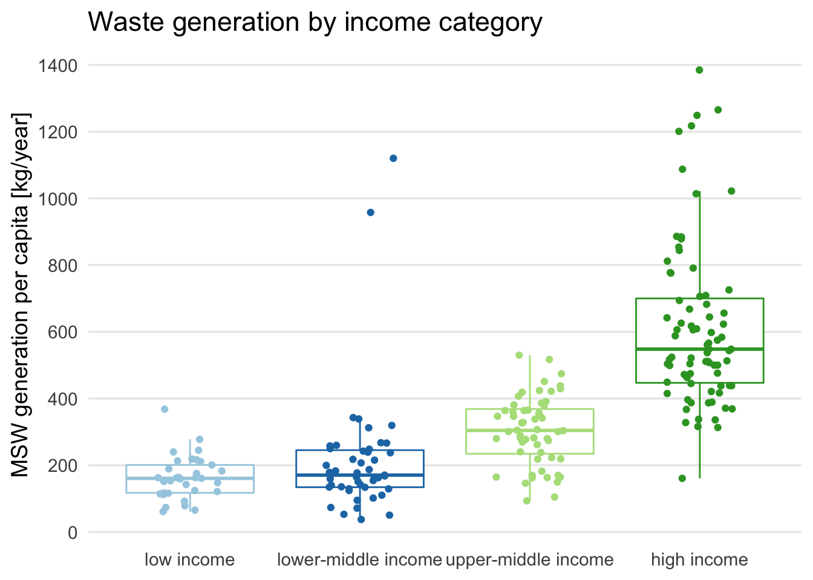

library(tidyverse)Application Exercise 15 - Communicate your results
Exam Practice
Task 1.0 (0.5)
- Render the document and fix any errors.
Task 1.1 (1)
Fill in the blanks
- Use the
read_csvfunction to import the following CSV file from the “data/raw_data/” directory:
msw-generation-and-composition-by-income.csv, and assign to the objectwaste_data
- Next to the code-chunk option
#| eval:change the value fromfalsetotrue
waste_data <- read_csv("data/raw_data/msw-generation-and-composition-by-income.csv")Task 1.2 (2)
Write the code yourself
Start with the
waste_dataobject and use a function of your choice to create a subset that removes NAs from the variable that stores values for municipal solid waste generation.Use the pipe operator to add another line of code which uses the
mutate()function to convert theincome_catvariable from a variable of type character to a variable of type factor. Define the factor levels yourself.Store the result as a new object in your environment with the name
waste_generation_tidy
income_cat_levels <- c("low income", "lower-middle income", "upper-middle income", "high income")
waste_generation_tidy <- waste_data %>%
drop_na(msw_capita_kg_year) %>%
mutate(income_cat = factor(income_cat, levels = income_cat_levels)) Task 1.3 (6)
- Use functions taught during the course to answer the following question for the
waste_generation_tidydata object:
What is the minimum, mean, standard deviation, and maximum of the municipal solid waste generation grouped by income? Also add the count for the number of countries in each income category.
- Store the result as a new object in your environment with the name
waste_generation_tbl.
waste_generation_tbl <- waste_generation_tidy %>%
group_by(income_cat) %>%
summarise(
count = n(),
min = min(msw_capita_kg_year),
mean = mean(msw_capita_kg_year),
sd = sd(msw_capita_kg_year),
max = max(msw_capita_kg_year)
)Introduction
What a Waste!
- What a Waste is a global project to aggregate data on solid waste management from around the world (World 2019)
Results & Discussion
Waste generation - Summary
# Question: How many countries are covered in this dataset?
no_of_countries <- waste_generation_tidy %>%
count(country_name) %>%
nrow()
# Question: What is the mean
mean_waste_generation_high_income <- waste_generation_tbl %>%
filter(income_cat == "high income") %>%
pull(mean)
mean_waste_generation_low_income <- waste_generation_tbl %>%
filter(income_cat == "low income") %>%
pull(mean)Waste generation - Table
waste_generation_tbl %>%
rename(`income category` = income_cat) %>%
knitr::kable(digits = 0)| income category | count | min | mean | sd | max |
|---|---|---|---|---|---|
| low income | 33 | 61 | 163 | 65 | 368 |
| lower-middle income | 47 | 37 | 216 | 191 | 1120 |
| upper-middle income | 56 | 93 | 305 | 103 | 530 |
| high income | 79 | 161 | 612 | 245 | 1385 |
Waste generation - Plot
ggplot(data = waste_generation_tidy,
mapping = aes(x = income_cat,
y = msw_capita_kg_year,
color = income_cat)) +
geom_boxplot(outlier.shape = NA) +
geom_jitter(width = 0.2) +
scale_y_continuous(breaks = seq(0, 1600, 200)) +
scale_color_brewer(type = "qual", palette = "Paired") +
labs(title = "Waste generation by income category",
x = NULL,
y = "MSW generation per capita [kg/year]") +
theme_minimal(base_size = 14) +
theme(panel.grid.minor = element_blank(),
panel.grid.major.x = element_blank(),
legend.position = "none") 
References
References
World, Bank. 2019. “What a Waste Global Database | Data Catalog.” https://datacatalog.worldbank.org/search/dataset/0039597.